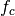
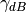
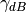
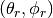

%pylab inline
Populating the interactive namespace from numpy and matplotlib
Synthesis of Ultra Wide Band Waveforms¶
Once the propagation channel has been evaluated. This is done in the pylayers.antprop.channel module. The received signal is evaluated in applying a convolution product of each ray tranfer function with a specific IR-UWB waveform. The necessary modules are
- pylayers.signal.bsignal.
- pylayers.signal.waveform
- pylayers.signal.channel
The module pylayers.simul.simulem is for definition of electromagnetic simulation.
from pylayers.signal.bsignal import *
from pylayers.signal.waveform import *
from pylayers.antprop.channel import *
from pylayers.simul.simulem import *
WARNING:traits.has_traits:DEPRECATED: traits.has_traits.wrapped_class, 'the 'implements' class advisor has been deprecated. Use the 'provides' class decorator.
<matplotlib.figure.Figure at 0x2af06dfcc1d0>
Generation of an Impulse of normalized energy¶
One possible manner to define an energy normalized short UWB impulse is as follows using bsignal.EnImpulse function.
The default waveform is a gaussian windowing of a sine wave of frequency
. The normalization term depends on the exponential scaling
factor  .
.


where  is the desired bandwidth defined at 
below the spectrum maximum and is the central frequency of
the pulse.
is the desired bandwidth defined at 
below the spectrum maximum and is the central frequency of
the pulse.
fc = 4
band = 2
thresh = 10
fe = 100
ip = EnImpulse([],fc,band,thresh,fe)
ip.info()
TUsignal
--------
shx : (343,)
shy : (343,)
dx : 0.01
xmin : -1.71
xmax : 1.71
ymin : -1.89545539648
ymax : 2.16154131873
Verification of energy normalization in both domains¶
E1= sum(ip.y*ip.y)*ip.dx()
print "Integration in time",E1
Integration in time 1.0
P = ip.esd()
E2 = sum(P.y)*P.dx()
print "Integration in frequency domain ",E2
Integration in frequency domain 1.0
Calculation of UWB channel impulse response¶
We choose to load a simple floor plan.
S = Simul()
S.L = Layout('defstr3.ini')
new file WHERE1.str
A simulation object has an info method providing a summary of simulation informations.
st = S.wav.st
sf = S.wav.sf
S.wav.info()
fcGHz : 4.493
typ : generic
feGHz : 100
Np : 3000
twns : 30
te : 0.01
threshdB : 3
bandGHz : 0.499
The waveform associated with the simulation object is
S.wav
{'Np': 3000,
'bandGHz': 0.499,
'fcGHz': 4.493,
'feGHz': 100,
'te': 0.01,
'threshdB': 3,
'twns': 30,
'typ': 'generic'}
S.wav.show()
Above the waveform is a generic UWB waveform. The interested user can add easyly any other mathematical expression of UWB waveform for investigation on pulse waveform modulation for example. The waveform can also comes from measurement. For now there are two version of this waveform which has been used during the M1 measurement campaign. One is not compensated W1compensate for an extra short delay which can introduse a bias when interpretating the observed delay in terms of distance. The non compensated version is W1offset from the time origin about 0.7 ns.
The waveform class should grow for incorporating more waveforms, especially waveforms compliants with the current IEEE 802.15.4a and IEEE 802.15.6 standards.
wavmeasured = Waveform(typ='W1compensate')
wavmeasured.show()
wavmeasured = Waveform(typ='W1offset')
wavmeasured.show()
Here the time domain waveform is measured and the anticausal part of the signal is artificially set to 0.
To handle properly the time domain wavefom in PyLayers, it is required to center the signal in the middle of the array. The waveform has embedded in the object its frequency domain and time domain representation.
- st member stands for signal in time domain
- sf member stands for signal in frequency domain
print type(S.wav.sf)
print type(S.wav.st)
<class 'pylayers.signal.bsignal.FUsignal'>
<class 'pylayers.signal.bsignal.EnImpulse'>
- FUsignal Frequency domain uniformly sampled base signal
- TUsignal Time domain uniformly sampled base signal
Construction of the propagation channel¶
The following representation shows the spatial spreading of the propagation channel. On the left are scattered the intensity of rays wrt to angles of departure (in azimut and elevation). On the right is the intensity of rays wrt to angles of arrival. It misses the application between the 2 planes as well as the delay dimension of the propagation channel.
from pylayers.antprop.signature import *
from pylayers.antprop.channel import *
S.L.build()
S.L
----------------
defstr3.ini
Image('/home/uguen/Bureau/P1/struc/images/TA-Office.png')
----------------
Number of points : 8
Number of segments : 9
Number of sub segments : 3
Number of cycles : 3
Number of rooms : 2
degree 0 : []
degree 1 : [-8 -7]
degree 2 : 4
degree 3 : 2
xrange :(758.49, 768.516)
yrange :(1111.9, 1115.963)
Useful dictionnaries
----------------
dca {cycle : []} cycle with an airwall
sl {slab name : slab dictionary}
name : {slab :seglist}
Useful arrays
----------------
pt : numpy array of points
normal : numpy array of normal
offset : numpy array of offset
tsg : get segment index in Gs from tahe
isss : sub-segment index above Nsmax
tgs : get segment index in tahe from Gs
lsss : list of segments with sub-segment
sla : list of all slab names (Nsmax+Nss+1)
degree : degree of nodes
S.L.Gt.pos
{0: (758.49, 1111.9),
1: (766.00300113353387, 1113.947479109665),
2: (761.00289669547806, 1113.915769812613)}
tx=np.array([759,1114,1.0])
rx=np.array([767,1114,1.5])
ctx = S.L.pt2cy(tx)
crx = S.L.pt2cy(rx)
The sequence of command below :
- initialize a signature between cycle ctx and cycle crx
- evaluates the signature with a given cutoff value
- calculates a set of 2D rays from signature and tx/rx coordinates
- calculates a set of 3D ray from 2D rays and layout and ceil height (default H=3m)
- calculates local basis and various geometric information out of the 3D ray and Layout
- fill and reorganize the interactions object with proper material chararcteristics
Si = Signatures(S.L,ctx,crx)
Si.run5(cutoff=5)
r2d = Si.rays(tx,rx)
r3d = r2d.to3D(S.L)
r3d.locbas(S.L)
r3d.fillinter(S.L)
Define a frequency base in GHz.
fGHz = np.arange(2,10,0.01)
Evaluate the propagation channel  . Here the
meaning of tilde is that the complex value of the channel do not include
the phase term due to delay along the ray.
. Here the
meaning of tilde is that the complex value of the channel do not include
the phase term due to delay along the ray.
C = r3d.eval(fGHz)
Construction of the transmission channel¶
The transmission channel is obtained from the combination of the
propagation channel and the vector antenna
pattern at both side of the radio link. This operation is implemented in
the prop2tran method of the Ctilde class.
sc = C.prop2tran()
The transmission channel is obtained by applying a vector radiation pattern using an antenna file.
In the presented case, it comes from a real antenna which has been used during the FP7 project WHERE1 measurement campaign M1.
sc
freq :2.0 9.99 800
shape :(345, 800)
tau :26.7186992365 99.5048504397
dist :8.01560977094 29.8514551319
Friis factor -j c/(4 pi f) has been applied
The antenna radiation pattern is stored in a very compact way thanks to Vector Spherical Harmonics decomposition. The following gives information about the content of the antenna object.
S.tx.A.info()
defant.vsh3
type : vsh
No vsh coefficient calculated yet
The figure below plot on a same graph all the tansfer function in modulus and phase of the ray transfer function.
If a realistic antenna is applied it gives
sca = C.prop2tran(S.tx.A,S.rx.A)
Calculate UWB Channel Impulse Response¶
Once the transmission channel has been evaluated on can convolved the waveform with the channel impulse response to get the received waveform.
r = sca.applywavB(S.wav.sfg)
r.y
array([ 0.00000000e+00, 0.00000000e+00, 0.00000000e+00, ...,
-1.24043824e-13, 8.30460833e-14, 2.32608932e-14])
fig,ax = r.plot(typ=['l20'])
plt.axis([15,90,-120,-60])
plt.title(u'Received Waveform $r(t)$')
<matplotlib.text.Text at 0x2af06e5a7e10>
r.plot(typ=['v'])
#plt.axis([15,60,-0.3,0.3])
plt.title(u'Received Waveform $r(t)$')
<matplotlib.text.Text at 0x2af06e42e190>
Hermitian symetry enforcment¶
If the number of point for the transmission channel and the waveform
were the same the mathematical operation is an Hadamrd-Shur product
between  and
and  .
.

In practice this is what is done after a resampling of the time base with a reinterpolated time step.
The process which consists in going from time domain to frequency domain is delegated to a specialized class pylayers.signal.bsignal.Bsignal which maintains the proper binding between signal samples and their indexation either in time or in frequency domain.
wgam = S.wav.sfg
Y = sc.apply(wgam)
tau = Y.taud
dod = Y.dod
doa = Y.doa
The transmission channel has a member data which is the time delay of each path in nano seconds. Notice that by default those delay are not sorted.
print 'tau =', tau[0:20]
tau = [ 26.71869924 27.93842436 29.10708199 29.64889324 30.03048589
30.075433 36.72255959 30.75261837 31.12068041 31.1640552
31.81807982 32.17395555 32.21591227 32.36081306 32.66533294
33.05244038 34.35921355 37.6193175 37.62655033 37.86521462]
h = plt.hist(tau,20)
Direction of arrival  in radians
print "doa = ", doa[1:10,:]
doa = [[ 1.8736812 -3.14159265]
[ 1.15838589 -3.14159265]
[ 1.62703943 2.69865609]
[ 1.62632401 -3.14087348]
[ 1.62624094 -2.65738656]
[ 1.61619728 0.01122758]
[ 1.84520693 2.69865609]
[ 1.84187905 -3.14087348]
[ 1.84149225 -2.65738656]]
plt.subplot(221)
ht = plt.hist(doa[:,0],20)
plt.xlabel(u'$\\theta_r$')
plt.ylabel('#')
plt.subplot(222)
hp = plt.hist(doa[:,1],20)
plt.xlabel(u'$\phi_r$')
plt.ylabel('#')
plt.subplot(223)
ht = plt.hist(dod[:,0],20)
plt.xlabel(u'$\\theta_t$')
plt.ylabel('#')
plt.subplot(224)
hp = plt.hist(dod[:,1],20)
plt.xlabel(u'$\phi_t$')
plt.ylabel('#')
plt.tight_layout()